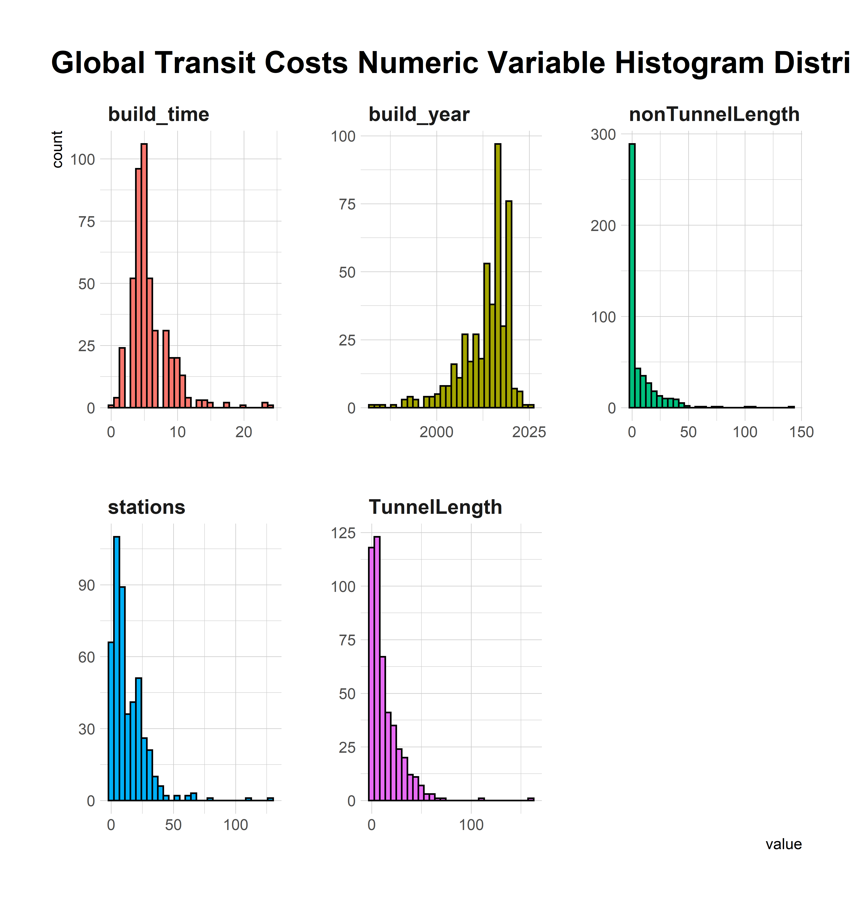
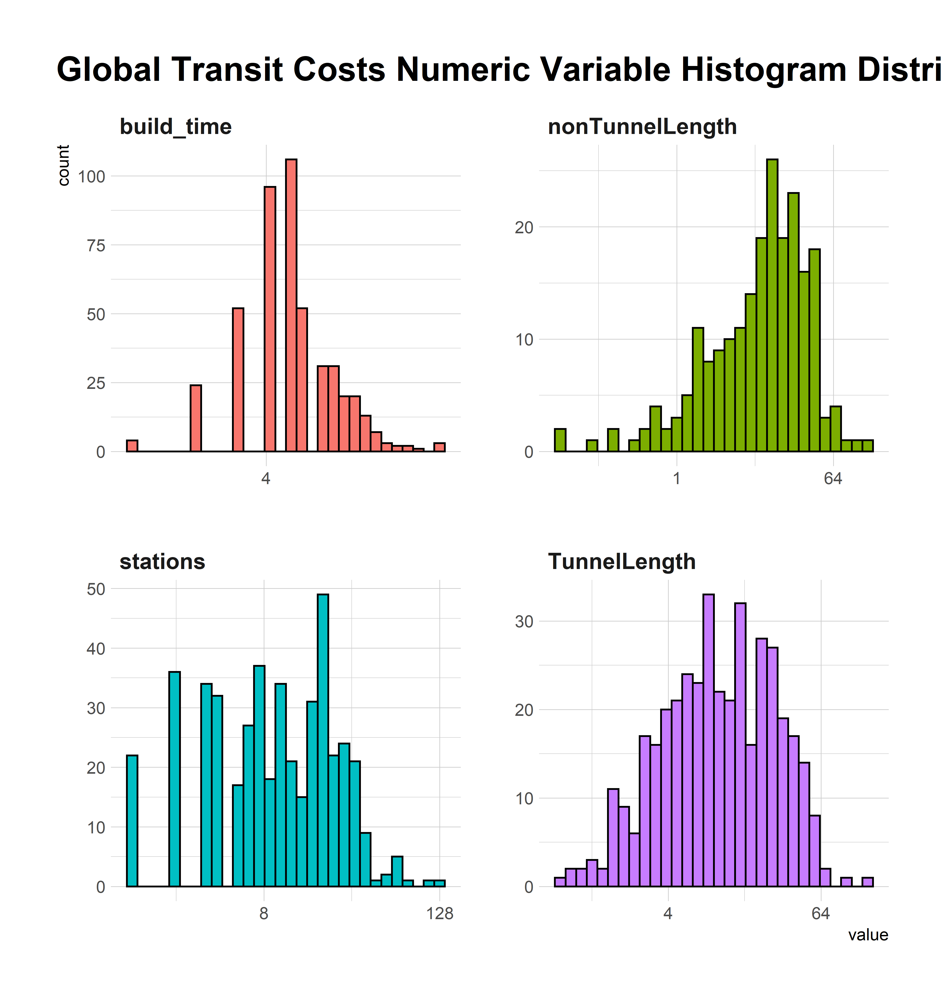
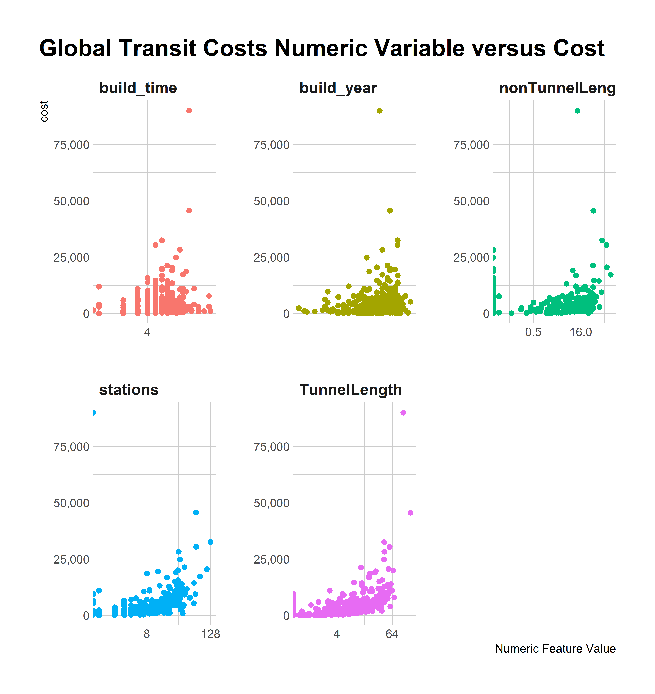
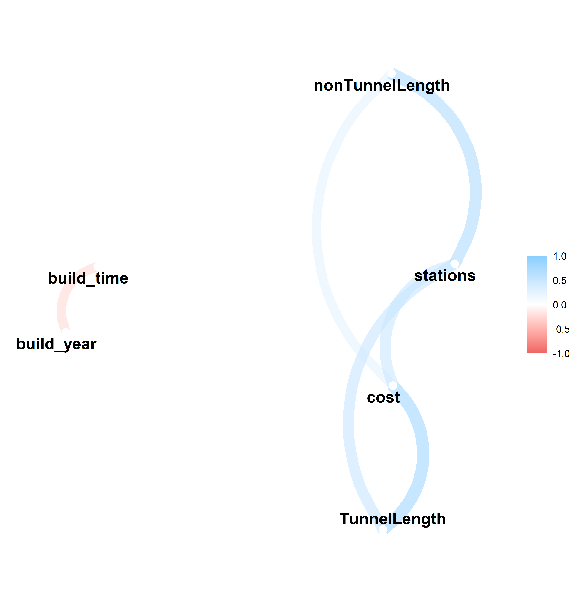
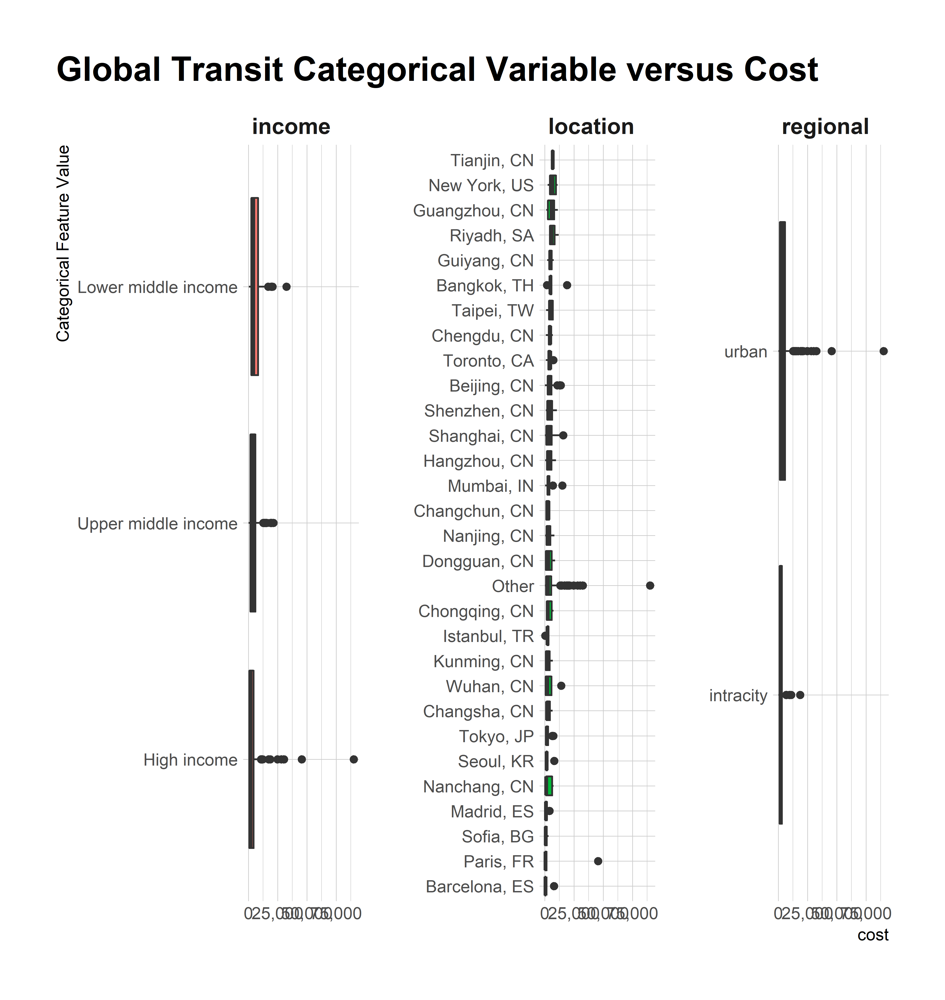
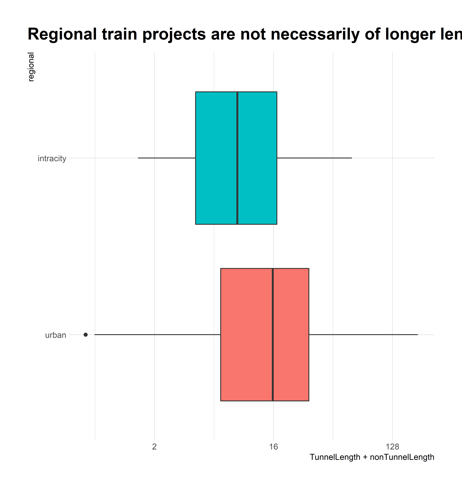

Last updated: 2021-01-04
Checks: 7 0
Knit directory: myTidyTuesday/
This reproducible R Markdown analysis was created with workflowr (version 1.6.2). The Checks tab describes the reproducibility checks that were applied when the results were created. The Past versions tab lists the development history.
Great! Since the R Markdown file has been committed to the Git repository, you know the exact version of the code that produced these results.
Great job! The global environment was empty. Objects defined in the global environment can affect the analysis in your R Markdown file in unknown ways. For reproduciblity it’s best to always run the code in an empty environment.
The command set.seed(20200907) was run prior to running the code in the R Markdown file. Setting a seed ensures that any results that rely on randomness, e.g. subsampling or permutations, are reproducible.
Great job! Recording the operating system, R version, and package versions is critical for reproducibility.
Nice! There were no cached chunks for this analysis, so you can be confident that you successfully produced the results during this run.
Great job! Using relative paths to the files within your workflowr project makes it easier to run your code on other machines.
Great! You are using Git for version control. Tracking code development and connecting the code version to the results is critical for reproducibility.
The results in this page were generated with repository version 3560473. See the Past versions tab to see a history of the changes made to the R Markdown and HTML files.
Note that you need to be careful to ensure that all relevant files for the analysis have been committed to Git prior to generating the results (you can use wflow_publish or wflow_git_commit). workflowr only checks the R Markdown file, but you know if there are other scripts or data files that it depends on. Below is the status of the Git repository when the results were generated:
Ignored files:
Ignored: .Rhistory
Ignored: .Rproj.user/
Ignored: fonts/
Ignored: rosm.cache/
Untracked files:
Untracked: figure/
Unstaged changes:
Modified: .gitignore
Modified: analysis/BackboneWatershed.Rmd
Note that any generated files, e.g. HTML, png, CSS, etc., are not included in this status report because it is ok for generated content to have uncommitted changes.
These are the previous versions of the repository in which changes were made to the R Markdown (analysis/GlobalTransitCost.Rmd) and HTML (docs/GlobalTransitCost.html) files. If you’ve configured a remote Git repository (see ?wflow_git_remote), click on the hyperlinks in the table below to view the files as they were in that past version.
| File | Version | Author | Date | Message |
|---|---|---|---|---|
| Rmd | 3560473 | opus1993 | 2021-01-04 | wflow_publish(“analysis/GlobalTransitCost.Rmd”) |
Our goal here is to explore data from the Transit Costs Project. The organization has created a database that spans more than 50 countries and totals more than 11,000 km of urban rail built since the late 1990s.
Why do transit-infrastructure projects in New York cost 20 times more on a per kilometer basis than in Seoul? Let’s look for insights into what the cost drivers are.
knitr::opts_chunk$set(
echo = TRUE,
fig.height = 7.402,
message = FALSE,
warning = FALSE,
cache = FALSE,
cache.lazy = FALSE,
df_print = "paged",
dpi = 300,
tidy = "styler"
)suppressPackageStartupMessages({
library(tidyverse)
library(lubridate)
library(here)
library(WDI)
library(tidymodels)
library(baguette)
library(themis)
})extrafont::loadfonts(quiet = TRUE)
theme_set(hrbrthemes::theme_ipsum_gs() +
theme(
plot.title.position = "plot",
plot.caption.position = "plot"
))We will load the latest data directly from the #TidyTuesday github repo.
raw <- tidytuesdayR::tt_load("2021-01-05")
Downloading file 1 of 1: `transit_cost.csv`transit_cost <- raw$transit_costLet’s also bring in a recent GDP per capita figure:
missing <- tibble(
country = "TW",
income = "High income",
gdp_per_capita = 54020,
pop = 23340000
)
country_incomes <- WDI(
indicator = c(
gdp_per_capita = "NY.GDP.PCAP.PP.KD",
pop = "SP.POP.TOTL"
),
start = 2019,
end = 2019,
extra = TRUE
) %>%
as_tibble() %>%
select(country = iso2c, income, gdp_per_capita, pop) %>%
filter(!is.na(income)) %>%
bind_rows(missing) %>%
mutate(income = as_factor(income)) %>%
mutate(country = if_else(country == "GB", "UK", country)) %>%
mutate(income = fct_relevel(
income,
"Aggregates",
"Low income",
"Lower middle income",
"Upper middle income"
))Prepare the data
transit_df <- transit_cost %>%
filter(!is.na(real_cost), !is.na(year), end_year != "X", real_cost > 0) %>%
left_join(country_incomes, by = "country") %>%
mutate(
build_year = case_when(
start_year == "5 years" ~ "2021",
start_year == "4 years" ~ "2021",
start_year == "not start" ~ "2022",
!is.na(start_year) ~ start_year,
!is.na(year) ~ as.character(year),
TRUE ~ "Look"
),
build_year = as.integer(build_year),
build_time = as.integer(end_year) - build_year,
length = if_else(is.na(length), 0, length),
tunnel = if_else(is.na(tunnel), 0, tunnel),
nonTunnelLength = length - tunnel,
build_year = as.integer(build_year),
stations = if_else(is.na(stations), 0, stations),
rr = if_else(is.na(rr), 0, rr),
regional = factor(rr, labels = c("urban", "intracity")),
location = fct_lump(glue::glue("{city}, {country}"), 25),
cost = as.numeric(real_cost)
) %>%
rename(TunnelLength = tunnel) %>%
select(cost, build_year, location, regional, nonTunnelLength, TunnelLength, stations, income, build_time)Let’s look at the distributions of the independent variables:
transit_df %>%
select(-cost) %>%
keep(is.numeric) %>%
gather() %>%
ggplot() +
geom_histogram(mapping = aes(x = value, fill = key), color = "black") +
facet_wrap(~key, scales = "free") +
scale_x_continuous(n.breaks = 3) +
theme(
legend.position = "",
plot.title.position = "plot"
) +
labs(title = "Global Transit Costs Numeric Variable Histogram Distributions")
The lengths and stations both skew right. What happens if we look at the same with an log function applied to x?
transit_df %>%
select(-cost, -build_year) %>%
keep(is.numeric) %>%
gather() %>%
ggplot() +
geom_histogram(mapping = aes(x = value, fill = key), color = "black", show.legend = FALSE) +
scale_x_continuous(n.breaks = 3, trans = "log2") +
facet_wrap(~key, scales = "free") +
labs(title = "Global Transit Costs Numeric Variable Histogram Distributions")
Another data visualization showing the relationships between the numeric features and cost:
transit_df %>%
keep(is.numeric) %>%
pivot_longer(-cost, names_to = "Feature", values_to = "Value") %>%
ggplot() +
geom_point(aes(x = Value, y = cost, color = Feature), show.legend = FALSE) +
scale_y_continuous(labels = scales::comma) +
facet_wrap(~Feature, scales = "free") +
scale_x_continuous(n.breaks = 3, trans = "log2") +
labs(
x = "Numeric Feature Value",
title = "Global Transit Costs Numeric Variable versus Cost"
)
Applying log transformations to length, station, and tunnel could be helpful.
What are the numeric variable correlations?
transit_df %>%
keep(is.numeric) %>%
corrr::correlate() %>%
corrr::network_plot(min_cor = 0.2)
There is a risk that there will be hidden interactions between numeric features.
Let’s explore the categorical variables.
transit_factors <- transit_df %>%
keep(is.factor) %>%
colnames()
chart <- c(transit_factors, "cost")
transit_df %>%
select_at(vars(chart)) %>%
pivot_longer(-cost, names_to = "Factor", values_to = "Level") %>%
mutate(
Factor = fct_reorder(Factor, cost),
Level = fct_reorder(Level, cost)
) %>%
ggplot() +
geom_boxplot(aes(x = Level, y = cost, fill = Factor), show.legend = FALSE) +
scale_y_continuous(labels = scales::comma) +
coord_flip() +
facet_wrap(~Factor, scales = "free") +
labs(
x = "Categorical Feature Value",
title = "Global Transit Categorical Variable versus Cost"
)
Paris, France and Doha (the costly “Other”) may be cost outliers. I wonder if the numeric variables will fully explain the true cost. Out of curiosity, what is the dataset implying about the length of a regional train?
transit_df %>%
ggplot() +
geom_boxplot(aes(
y = regional,
x = TunnelLength + nonTunnelLength,
fill = regional
), show.legend = FALSE) +
scale_x_continuous(trans = "log2", labels = scales::comma_format()) +
labs(title = "Regional train projects are not necessarily of longer length.")
split the data into training and testing sets
transit_split <- initial_split(transit_df)
transit_split<Analysis/Assess/Total>
<351/117/468>transit_train <- training(transit_split)
transit_test <- testing(transit_split)At some point we’re going to want to do some parameter tuning, so we’re going to use cross-validation. We can create a cross-validated version of the training set in preparation for that moment using vfold_cv().
transit_folds <- vfold_cv(transit_train, v = 10, strata = "cost")Let’s craft a recipe
transit_rec <- recipe(cost ~ ., data = transit_train) %>%
step_normalize(all_numeric()) %>%
step_BoxCox(nonTunnelLength, stations, TunnelLength) %>%
step_dummy(all_nominal()) %>%
step_interact(~ stations:nonTunnelLength)
transit_prep <- prep(transit_rec)linear_spec <- linear_reg() %>%
set_engine("glmnet") %>%
set_mode("regression")
transit_wflow <- workflow() %>%
add_model(linear_spec) %>%
add_recipe(transit_rec)
transit_wflow== Workflow ====================================================================
Preprocessor: Recipe
Model: linear_reg()
-- Preprocessor ----------------------------------------------------------------
4 Recipe Steps
* step_normalize()
* step_BoxCox()
* step_dummy()
* step_interact()
-- Model -----------------------------------------------------------------------
Linear Regression Model Specification (regression)
Computational engine: glmnet doParallel::registerDoParallel()
crash_res <- fit_resamples(
transit_wflow,
transit_folds
)
sessionInfo()R version 4.0.3 (2020-10-10)
Platform: x86_64-w64-mingw32/x64 (64-bit)
Running under: Windows 10 x64 (build 19041)
Matrix products: default
locale:
[1] LC_COLLATE=English_United States.1252
[2] LC_CTYPE=English_United States.1252
[3] LC_MONETARY=English_United States.1252
[4] LC_NUMERIC=C
[5] LC_TIME=English_United States.1252
attached base packages:
[1] stats graphics grDevices utils datasets methods base
other attached packages:
[1] themis_0.1.3 baguette_0.1.0 yardstick_0.0.7 workflows_0.2.1
[5] tune_0.1.2 rsample_0.0.8 recipes_0.1.15 parsnip_0.1.4
[9] modeldata_0.1.0 infer_0.5.3 dials_0.0.9 scales_1.1.1
[13] broom_0.7.3 tidymodels_0.1.2 WDI_2.7.1 here_1.0.1
[17] lubridate_1.7.9.2 forcats_0.5.0 stringr_1.4.0 dplyr_1.0.2
[21] purrr_0.3.4 readr_1.4.0 tidyr_1.1.2 tibble_3.0.4
[25] ggplot2_3.3.2 tidyverse_1.3.0 workflowr_1.6.2
loaded via a namespace (and not attached):
[1] mlr_2.18.0 readxl_1.3.1 backports_1.2.1
[4] fastmatch_1.1-0 systemfonts_0.3.2.9000 selectr_0.4-2
[7] plyr_1.8.6 tidytuesdayR_1.0.1 splines_4.0.3
[10] listenv_0.8.0 usethis_2.0.0 digest_0.6.27
[13] foreach_1.5.1 htmltools_0.5.0 earth_5.3.0
[16] fansi_0.4.1 checkmate_2.0.0 magrittr_2.0.1
[19] BBmisc_1.11 unbalanced_2.0 doParallel_1.0.16
[22] globals_0.14.0 extrafont_0.17 modelr_0.1.8
[25] gower_0.2.2 R.utils_2.10.1 extrafontdb_1.0
[28] hardhat_0.1.5 colorspace_2.0-0 ggrepel_0.9.0
[31] rvest_0.3.6 haven_2.3.1 xfun_0.19
[34] crayon_1.3.4 jsonlite_1.7.2 libcoin_1.0-6
[37] survival_3.2-7 iterators_1.0.13 glue_1.4.2
[40] gtable_0.3.0 ipred_0.9-9 R.cache_0.14.0
[43] Rttf2pt1_1.3.8 mvtnorm_1.1-1 DBI_1.1.0
[46] Rcpp_1.0.5 plotrix_3.7-8 Cubist_0.2.3
[49] GPfit_1.0-8 Formula_1.2-4 lava_1.6.8.1
[52] prodlim_2019.11.13 httr_1.4.2 FNN_1.1.3
[55] ellipsis_0.3.1 farver_2.0.3 ParamHelpers_1.14
[58] pkgconfig_2.0.3 R.methodsS3_1.8.1 nnet_7.3-14
[61] dbplyr_2.0.0 RJSONIO_1.3-1.4 labeling_0.4.2
[64] tidyselect_1.1.0 rlang_0.4.9 DiceDesign_1.8-1
[67] reshape2_1.4.4 later_1.1.0.1 munsell_0.5.0
[70] TeachingDemos_2.12 cellranger_1.1.0 tools_4.0.3
[73] cli_2.2.0 corrr_0.4.3 generics_0.1.0
[76] evaluate_0.14 yaml_2.2.1 knitr_1.30
[79] fs_1.5.0 RANN_2.6.1 future_1.21.0
[82] whisker_0.4 R.oo_1.24.0 xml2_1.3.2
[85] compiler_4.0.3 rstudioapi_0.13 curl_4.3
[88] reprex_0.3.0 lhs_1.1.1 stringi_1.5.3
[91] plotmo_3.6.0 ps_1.5.0 gdtools_0.2.2
[94] hrbrthemes_0.8.6 memuse_4.1-0 lattice_0.20-41
[97] Matrix_1.2-18 styler_1.3.2 vctrs_0.3.6
[100] pillar_1.4.7 lifecycle_0.2.0 furrr_0.2.1
[103] data.table_1.13.4 httpuv_1.5.4 R6_2.5.0
[106] promises_1.1.1 C50_0.1.3.1 parallelly_1.22.0
[109] codetools_0.2-16 MASS_7.3-53 assertthat_0.2.1
[112] rprojroot_2.0.2 ROSE_0.0-3 withr_2.3.0
[115] parallel_4.0.3 hms_0.5.3 grid_4.0.3
[118] rpart_4.1-15 timeDate_3043.102 class_7.3-17
[121] rmarkdown_2.6.4 inum_1.0-1 parallelMap_1.5.0
[124] git2r_0.27.1 partykit_1.2-11 pROC_1.16.2